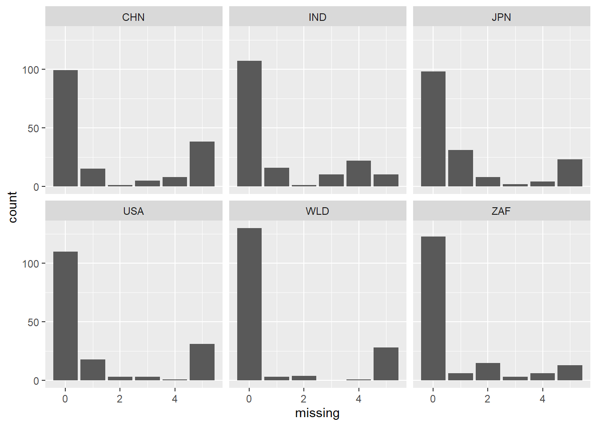

Chapter 4 Missing values
Since countries have different priorities when gethering and reporting employment data, there are a lot of missing values in the dataset.
## 锘緾ountry.Name Country.Code Series.Name Series.Code X2012..YR2012. X2013..YR2013. X2014..YR2014. X2015..YR2015. X2016..YR2016.
## 0 0 0 0 210 195 214 211 275Understandably, the dataset does not have missing data regarding the country’s name or the names of the factor (series) being measured. Furthermore, it seems that yearly the amount of missing data is around 210. Looking at the data, much of the missing data is not reported for all 5 years, which results in the consistent number of missing values. However, in 2013 the amount of missing data seemed to be lower at 195, and in 2016 the amount of missing data was much higher at 275.
As shown above, for the vast majority of the rows, there are 0 missing values. This makes sense, as usually if the country reports the data in one year it’ll usually continue to report the data for every year. The next most common value seems to be 5, which means that the country simply does not report that data. The interesting values are 1 - 4, which means that the data was reported for some but not all of the years.

A similar pattern seems to hold for the individual countries, where 0 is the most common number of missing values. However, for India, Japan, and South Africa, the second most common number of missing values are 4, 1, and 2, respectively. Since these are the countries with “unusual” distributions of missing values, it seems likely that these are the countries that cause the unusual number of missing values in year 2013 and 2016.
## X2012..YR2012. X2013..YR2013. X2014..YR2014. X2015..YR2015. X2016..YR2016.
## 0 0 0 0 0Japan reported slightly less missing values than average in 2013, which lines up with the global trend. However, the big difference is that Japan reported significantly more missing values in 2016. This probably contributed to the high number of missing data in 2016
## X2012..YR2012. X2013..YR2013. X2014..YR2014. X2015..YR2015. X2016..YR2016.
## 0 0 0 0 0It seems that India is reporting more missing values as time goes on, which slightly contributes to the unusual values in 2013 and 2016.
## X2012..YR2012. X2013..YR2013. X2014..YR2014. X2015..YR2015. X2016..YR2016.
## 0 0 0 0 0Contrary to the global trend, South Africa actually reported its second most missing values in 2013. It also reported its most missing values in 2016 (almost double its median), which certainly impacted the total number of missing values. Also, out of the 5 countries we are looking at, South Africa reports the least amount of missing values.
## X2012..YR2012. X2013..YR2013. X2014..YR2014. X2015..YR2015. X2016..YR2016.
## 0 0 0 0 0As expected, China was fairly consistent in its missing values, with slightly less in 2013 and slightly more in 2016. Out of the 5 countries we are looking at, China seems to have the most missing values.
## X2012..YR2012. X2013..YR2013. X2014..YR2014. X2015..YR2015. X2016..YR2016.
## 0 0 0 0 0The United States also reports a large number of missing values. Like other countries, it reports its least amount of missing values in 2013 and most in 2016. However, its second largets number of missing values occurs in 2012.
## X2012..YR2012. X2013..YR2013. X2014..YR2014. X2015..YR2015. X2016..YR2016.
## 0 0 0 0 0In general, the world wide statistics are fairly consistent, with slightly more missing at 2016. It seems that the increase in missing values in 2016 is a world wide phenomenon for some reason.
In our another file, we do a whole missing value checking. We only keep the value which are included in years, since all categorical varibles do not have missing value.
This graph shows as the time gets closer, the missing values are getting more. So we need to choose years data from the ahead.